Galerij
Ondanks dat er zich in heel Amsterdam honderden minibiebs bevinden, zijn ze soms erg moeilijk te spotten of zitten ze erg goed verstopt. Daarom heb ik kleine tocht door Amsterdam gemaakt om op zoek te gaan naar zoveel mogelijk minibiebjes. Hieronder ziet u welke ik allemaal tegen ben gekomen en waar ze zich bevinden. Misschien zit er wel eentje bij u om de hoek!
Anfieldroad 108.

Curiestraat 4.
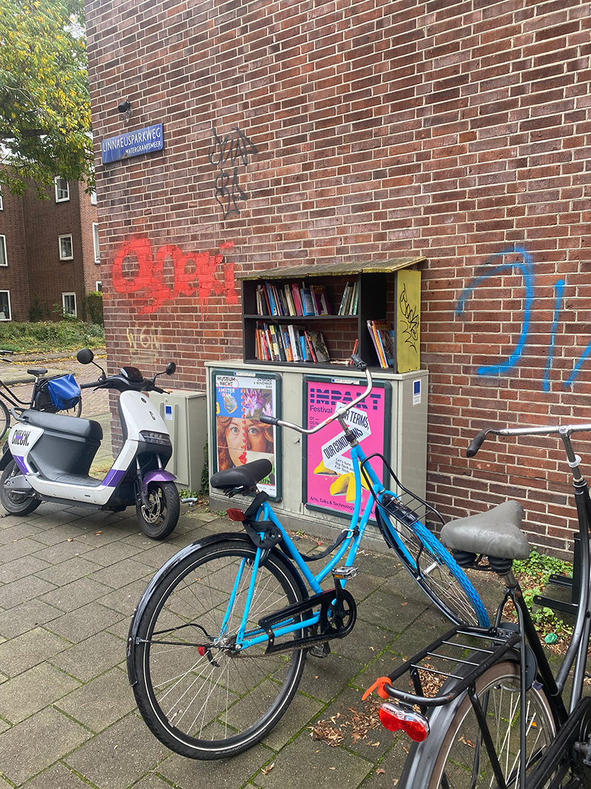Fraunhoferstraat 41.
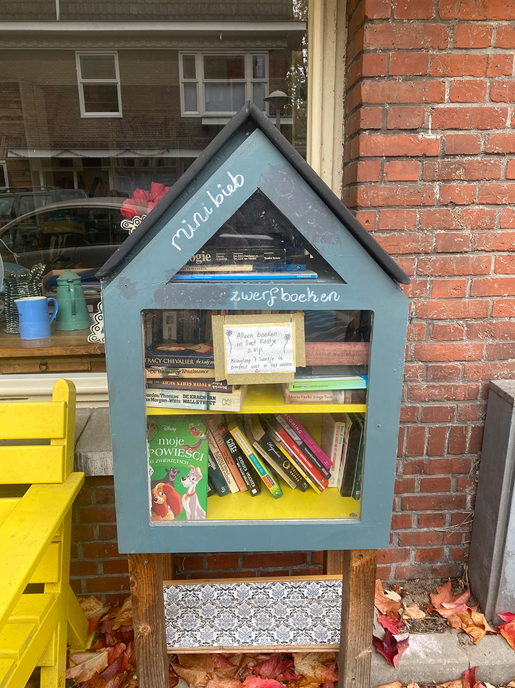Archimedesweg 8.
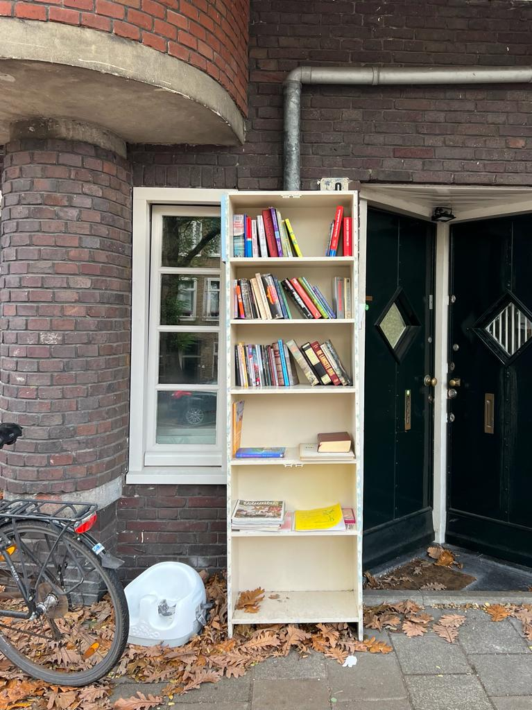Pieter Zeemanlaan 8.
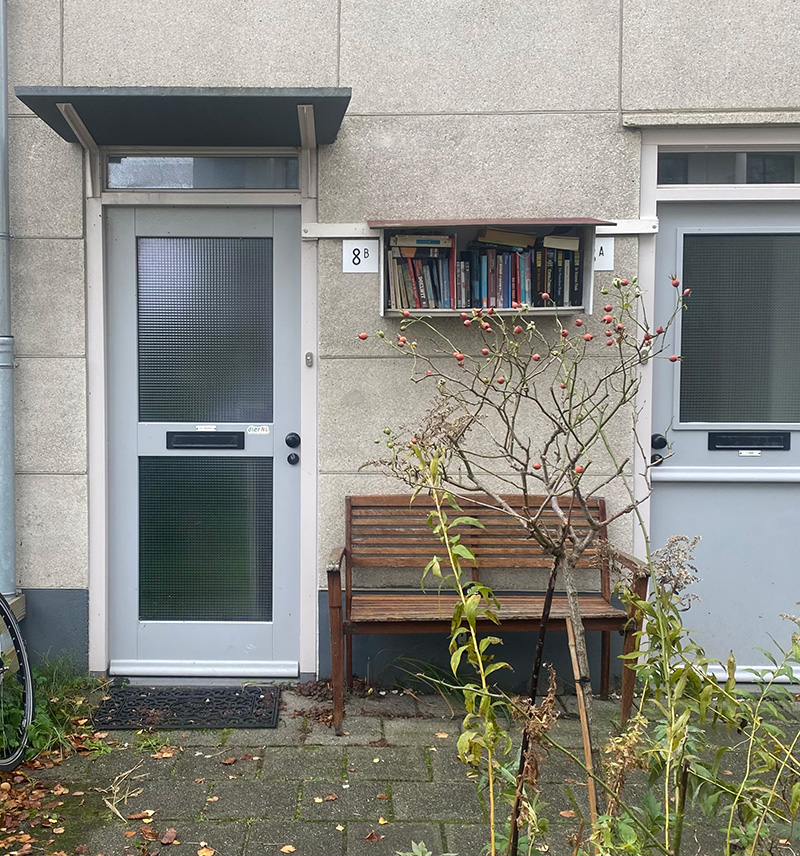Wakkerstraat 2
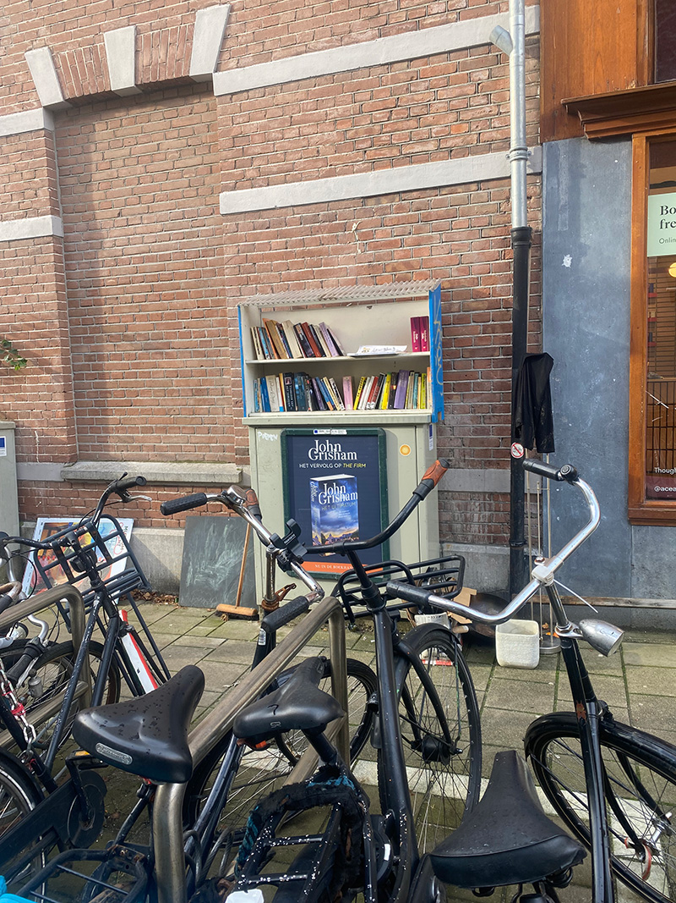Blasiusstraat 104.
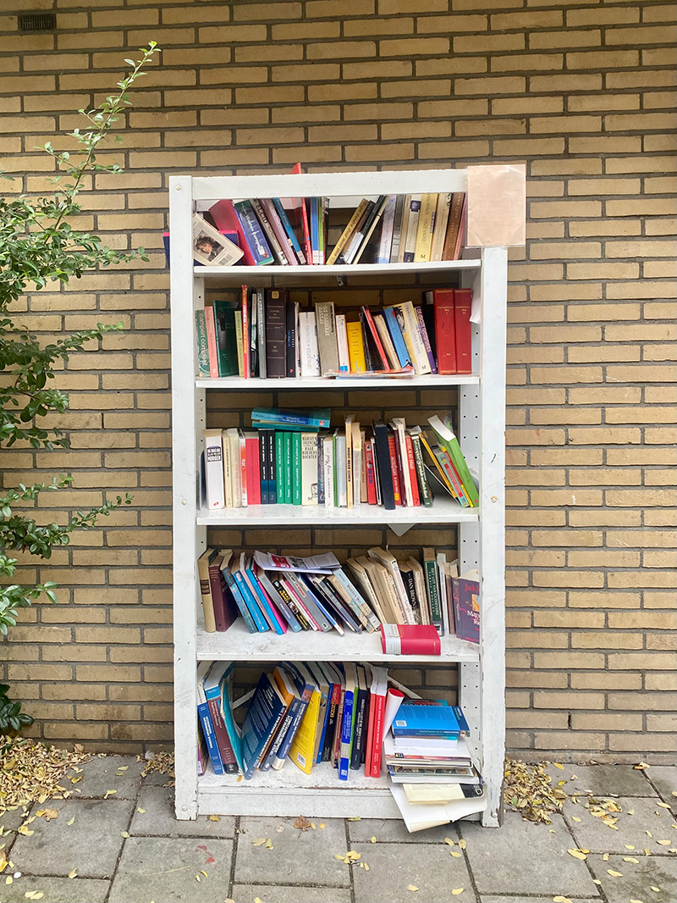Mary Zeldenrusstraat 86.
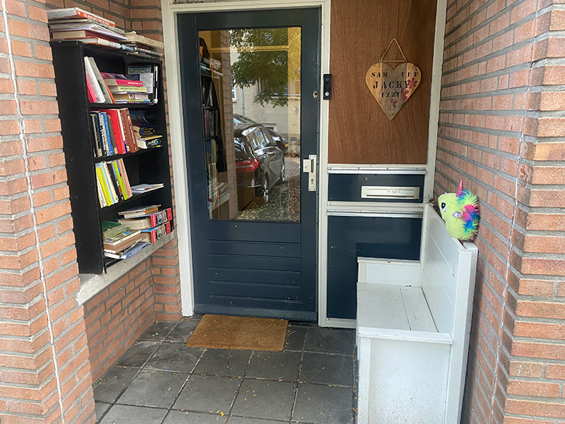'S-gravesandestraat 2.

Valckenierstraat 29

Henri Polaklaan 15.

Plantage Doklaan 5.
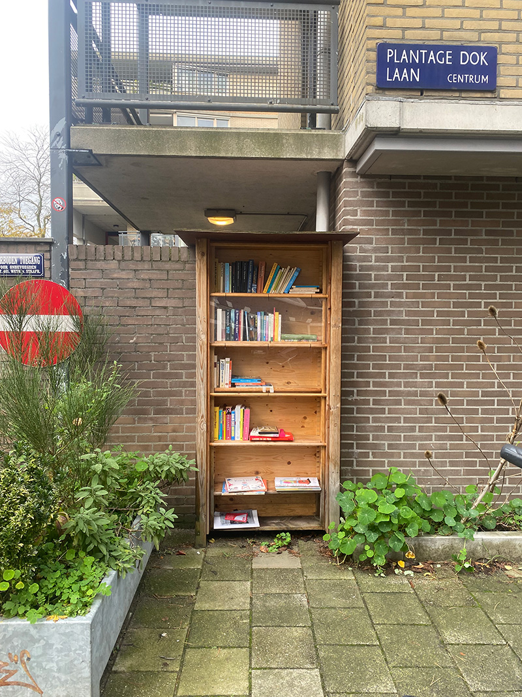Entrepotdok 36.
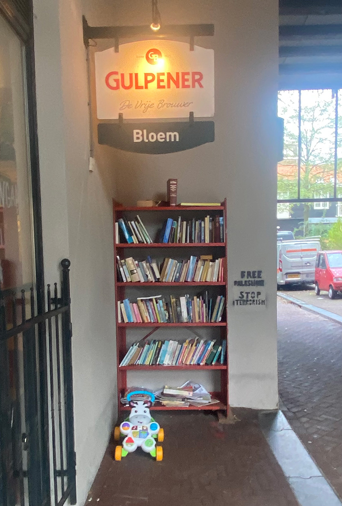Laagte Kadijk37.
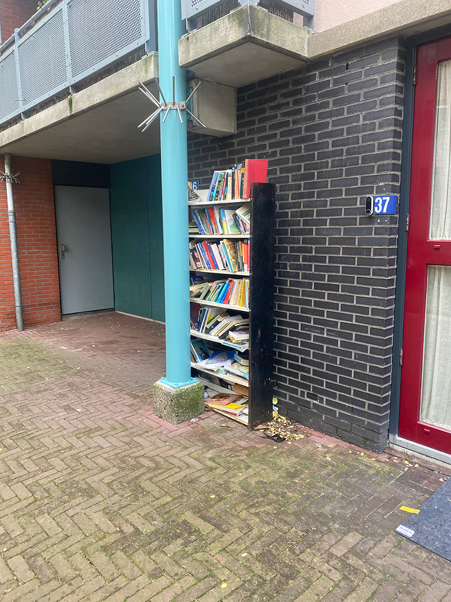windroosplein 110.

Wittenburgkade 7.
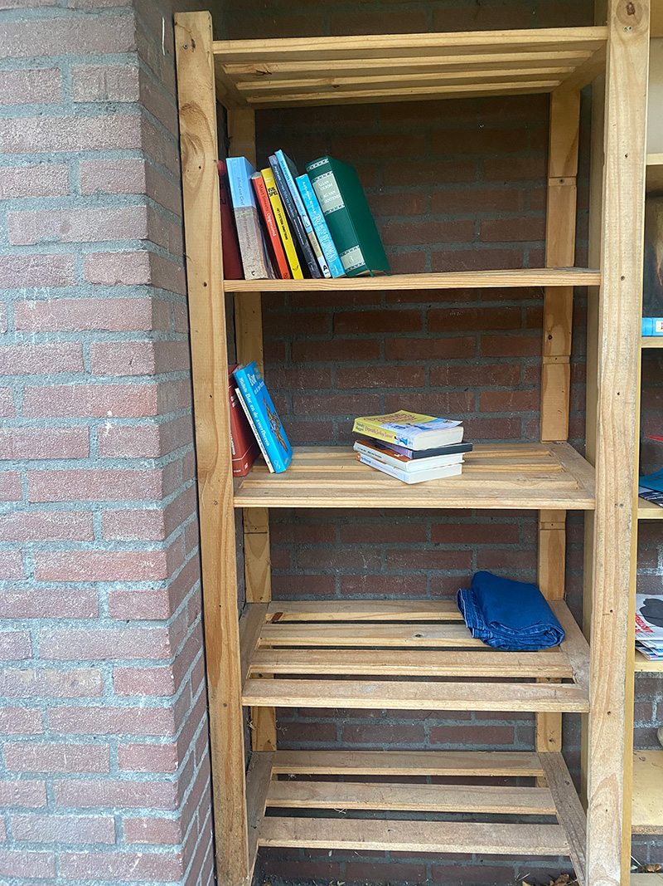